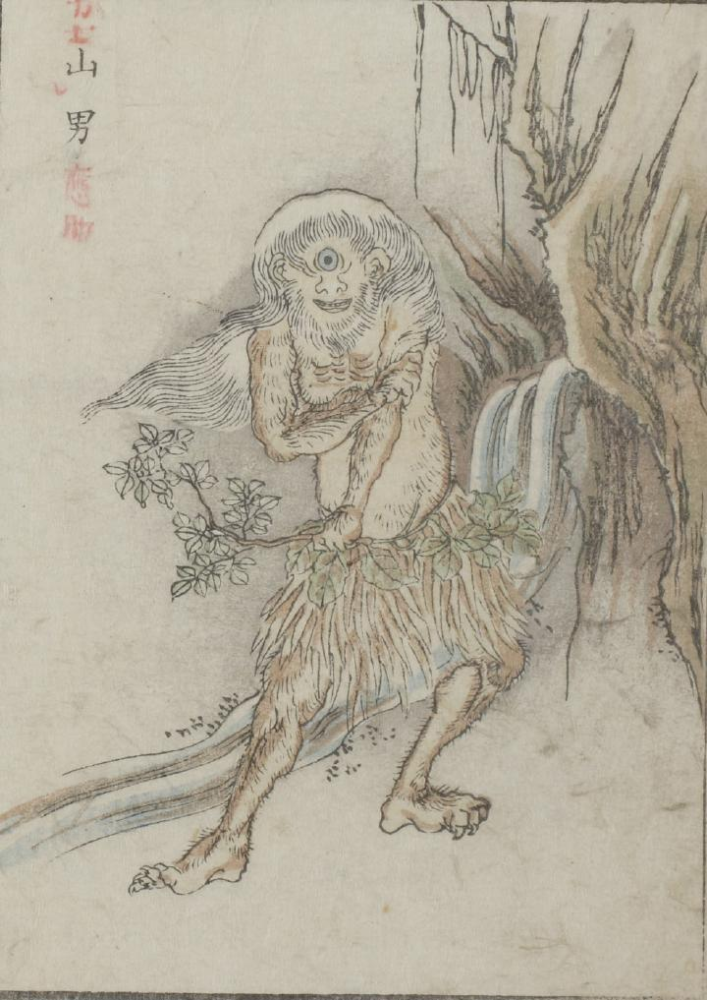

山男；ヤマオトコ，一つ目；ヒトツメ

山中に一つ目の山男が立っている。髪は長く顔は白ひげで覆われ、手足には鋭い爪が生え体毛が濃い。上半身は裸で木の葉の腰蓑、木の枝を持っている。
出典：親書誌：U426_nichibunken_0051：怪物画本；カイブツエホン／日付：2006／資源識別子：U426_nichibunken_0051_0018_0000
Copyright (c)2010- International Research Center for Japanese Studies, Kyoto, Japan. All rights reserved.